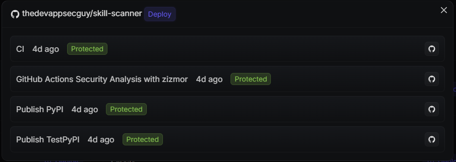

Why this matters
Layered controls reduce risk, but attackers still target the workflow, the credentials it can reach, and the runner environment it executes in.
Layered proactive controls
These layers are all useful. The problem is that most of them reduce risk before execution or limit blast radius after compromise, without giving you much runtime signal when something actually goes wrong.
Install scripts
Try to limit or disable arbitrary code execution during build time.
Good for reducing obvious abuse, but not for telling you what executed once the pipeline is already running.
Pinned dependencies
Visible control at the top layer of the dependency tree.
The blind spot is transitive dependencies and nested composite actions that are not directly visible, pinned, or audited.
Cooldown strategies
Useful for letting early package releases settle before they hit production pipelines.
That delay often just turns the wider community into the canary instead of detecting abuse in your own environment.
Package intelligence
Helpful for spotting known malicious or suspicious packages.
It stays reactive, and the signal often arrives after the package has already been executed somewhere.
GitHub Actions controls
Reduce known attack paths such as `pwn_request` style abuse and common expression-injection mistakes.
These controls close documented paths, but they are not runtime detection for malicious code that still lands in the job.
Unprivileged sandboxing in CI
Useful for containing the damage when the job environment is compromised.
It limits impact, but compromise can still happen before you know that suspicious behavior occurred.
Private registries and proxies
Strong guardrails for controlling what is allowed into the pipeline.
They stay prevention-focused and policy-driven rather than confirming runtime misuse inside a successful build.
What attackers target
The attack surface extends well beyond the package itself.
- Confusing event behavior, unclear permission boundaries, and unexpected execution contexts that let sensitive workflows run in unsafe ways.
- Over-permissioned workflows and weak trust boundaries between repositories, actors, and triggers.
- Secrets that flow too broadly by default, especially through reusable workflows or unexpected workflow paths.
- Runners with unrestricted outbound network access, which makes secret exfiltration and unauthorized publishing easier.
- Hidden action and dependency resolution paths, including nested and transitive components that are difficult to review directly.
Recent examples:
- Trivy compromised by TeamPCP: malicious releases and GitHub Actions were used to steal runner credentials and exfiltrate secrets.
- s1ngularity aftermath: compromised Nx packages leaked environment variables, GitHub and npm tokens, and exposed private repositories.
- Shai-Hulud / PostHog post-mortem: a stolen bot PAT led to broader GitHub secret theft and malicious package publishing.
That is why runtime visibility matters: once the workflow starts, the build environment itself becomes the attacker's most valuable target.
Runtime signal without heavy instrumentation
Hardening still matters, but recent supply chain incidents exposed the same gap again and again: a workflow can look normal on the surface while malicious code is already pulling credentials out of the runner.
Canary credentials are useful because they turn secret theft into something visible. You place decoy credentials where real ones usually live, so the same code path that harvests legitimate secrets is likely to collect the fake ones too.
That makes canaries a practical detective control in CI/CD. They do not prevent the initial compromise, but they can reveal that credentials have left the build environment and give teams a concrete signal to investigate before the compromise spreads quietly into the next system, package, or pipeline.
